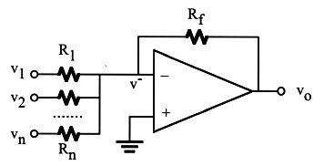

Next: Single-Supply Op Amps and Up: Chapter 5: Operational Amplifiers Previous: Operational Amplifier
The full analysis of the op-amp circuits as shown in the three examples
in the previous section may not be necessary if only the voltage gain is
of interest, which can be found based on the “virtual ground” assumption.
Specifically, as
is in the range between the positive
and negative voltage supplies (e.g., , the rails) and
,
, i.e.,
.
If one of the two inputs is grounded, the other one is also approximately
grounded, or virtually grounded. More generally,  and
and  can
be assumed to be virtually the same, even if none of them is grounded. Based
on this assumption, the analysis of all op-amp circuits is significantly
simplified. However, note that if the input and output resistances of the
op-amp circuits are of interest as well, the full analysis shown previously
is necessary.
can
be assumed to be virtually the same, even if none of them is grounded. Based
on this assumption, the analysis of all op-amp circuits is significantly
simplified. However, note that if the input and output resistances of the
op-amp circuits are of interest as well, the full analysis shown previously
is necessary.
Now consider the voltage gain of the following typical op-amp circuits:
| (34) |
As is very large, the current into the op-amp is negligible, and
. Applying KCL to the node of , we have
 i.e. i.e. |
(35) |
In general,  and
and  of the inverter can be replaced by two networks (with
impedances and
of the inverter can be replaced by two networks (with
impedances and  respectively) containing resistors and capacitors and
the analysis of the circuit can be carried out easily in frequency domain:
respectively) containing resistors and capacitors and
the analysis of the circuit can be carried out easily in frequency domain:
 |
(36) |
Also, the input resistance can be easily obtained to be , based on the virtual ground assumption.
| i.e. | (37) |

Apply KCL to :
| i.e. | (38) |

It can be shown that (see here) the output is some algebraic sum of the inputs with both positive and negative coefficients:
| (39) |
We note that the differential amplifier is similar to an inverting
amplifier but with an additional input to the non-inverting side.
We first define
, and then apply KCL to both
and to get:
| i.e. | (40) |
| (41) |
| (42) |
Typically, and , and we have
| (43) |
| (44) |
| (45) |
The input resistances of this differential amplifier can be found to be
 : assuming
, then
: assuming
, then
 , and
, and
, and
, and
| (46) |
 :
:
| i.e. | (47) |
Note that there is a conflict of interest in terms of . To have a
large gain, , we want to be small, but to have a high
input resistance , we want to be large. This issue will be
addressed by the following circuit.
We further consider some special cases:
 can be any value), then ,
and the circuit is a combination of inverter and a non-inverter amplifiers:
can be any value), then ,
and the circuit is a combination of inverter and a non-inverter amplifiers:
| (48) |
| (49) |
 and
, then the circuit becomes the inverter:
and
, then the circuit becomes the inverter:
| (50) |
 , then the circuit becomes the
non-inverter:
, then the circuit becomes the
non-inverter:
| (51) |
If one of the two inputs, connected to a constant reference voltage treated as a reference voltage, then the differential amplifier can also be used as a level shifter.
 positively shifted by a constant value :
positively shifted by a constant value :
| where | (52) |
 negatively shifted by :
negatively shifted by :
| where | (53) |
The main drawback of the differential amplifier is that its input impedance () may not be high enough if the output impedance of the source is high. To overcome this problem, two non-inverting amplifiers with high input resistance are used each for one of the two inputs to the differential amplifier. The resulting circuit is called the instrumentation amplifier.
Recall that the output resistance of a non-inverting amplifier is
very low, its output voltage will not affected by the load circuit,
here the differential amplifier whose its input resistance (
and ) is not very high. Therefore the outputs of the two
non-inverters in the first stage of the instrumentation amplifier
are:
| (54) |
| (55) |
can be combined to become ,
i.e., , then the output can be written as:
| (56) |
Alternatively, we consider the current going from to
through , , and :
| (57) |
| (58) |
 |
(59) |
| (60) |
Without feedback, the output of an op-amp is
. As  is
large,
is
large,  is saturated, equal to either the positive or the negative
voltage supply, depending on whether or not is greater than .
When an input of any waveform is compared with a reference voltage, the
output is a square wave:
is saturated, equal to either the positive or the negative
voltage supply, depending on whether or not is greater than .
When an input of any waveform is compared with a reference voltage, the
output is a square wave:

These two possible outputs, positive and negative, can be treated as “1”
and “0” of the binary system. The figure shows an A/D converter built by
three op-amps to measure voltage  from 0 to 3 volts with resolution
1 V.
from 0 to 3 volts with resolution
1 V.
Due to the voltage divider, the input voltages to the three op-amps are, respectively, 2.5V, 1.5V and 0.5V. The output of these op-amps are listed below for each of the input voltage levels. A digital logic circuit (a decoder) can convert the 3-bit output of the op-amps to the 2-bit binary representation.
| (61) |
Integrator
In time domain, as and , we have (KCL)
| i.e., | (62) |
| (63) |
Differentiator
If we swap the resistor and the capacitor, we get in time domain:
| i.e., | (64) |
| (65) |
A proportional-integral-derivative (PID) controller can be implemented as shown. The output of the circuit is a linear combination of the signal together with its integral and derivative:
| (66) |


Assuming
 , we can show that the output current
through the load
, we can show that the output current
through the load  is a constant determined by the input
voltages and , as well as the circuit parameters
(see here):
is a constant determined by the input
voltages and , as well as the circuit parameters
(see here):
| (67) |

Based on the relationship between the current through and voltage across a diode and the virtual ground assumption, we can show that the output voltage of the exponential amplifier (left) is approximately an exponential function of the input voltage, and the output voltage of the logarithmic amplifier (right) is approximately a logarithmic function of the input voltage:
| (68) |
Many op-amp circuits practically used can be found here.